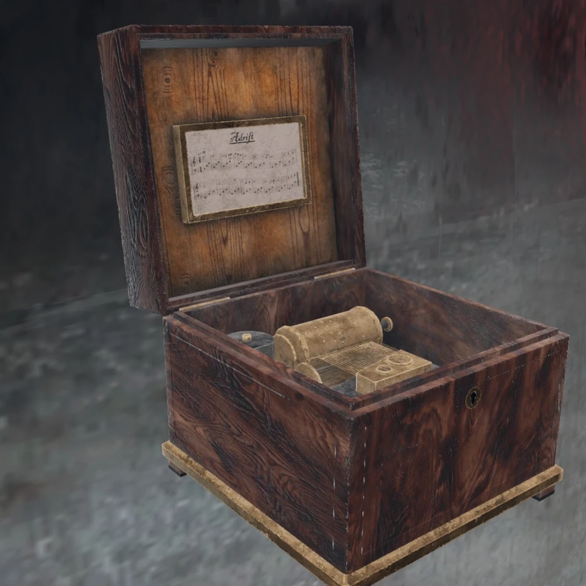
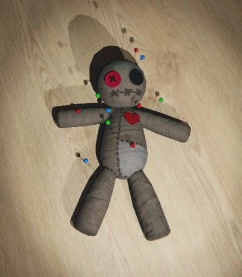
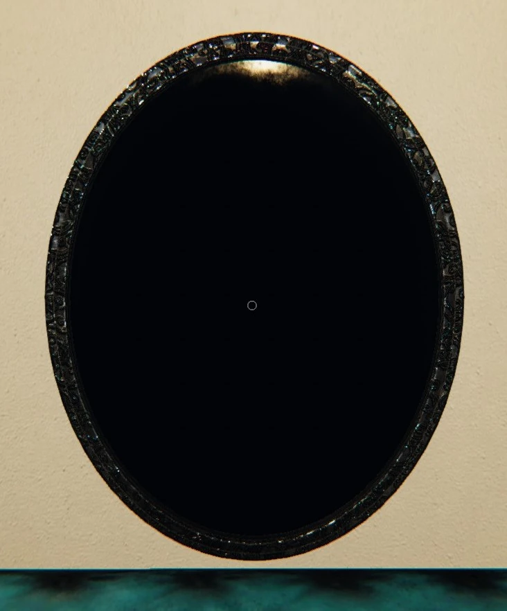
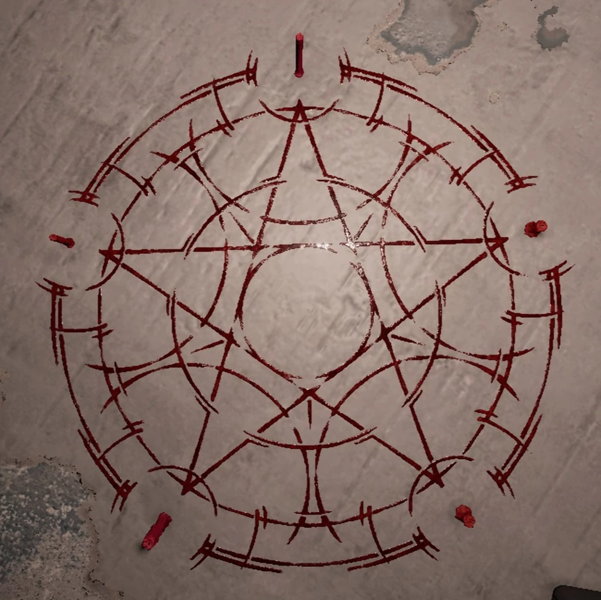
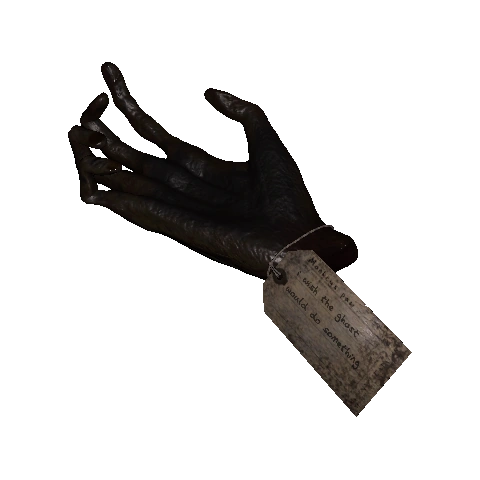
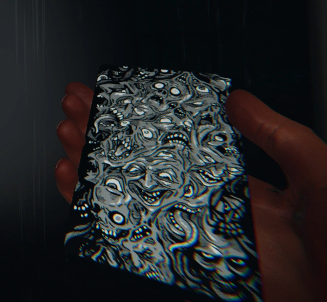
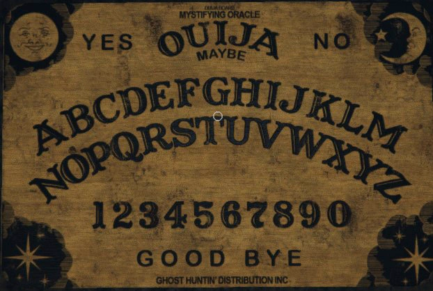

Phasmophobia Cursed Object Guides
Music Box

- Holding the box while active drains sanity, ~2.5% per second, up to 75%.
- Plays music for 30 seconds, revealing the ghost's singing.
- Using it in the ghost room may trigger a hunt.
- Dropped while active? Instant hunt.
Voodoo Doll

- Each pin causes a 10% sanity loss.
- 1 of 10 pins will trigger a Cursed Hunt.
- Pin pulls are Random.
- Using at 0% sanity will instantly deplete all pins and Start a hunt.
Black Mirror

- Using it costs 20% sanity instantly, then drains 10% per second.
- Shows the Favorite room of the ghost.
- Breaking the mirror at 0% sanity will trigger a Cursed Hunt.
Summoning Circle

- Lighting a candle removes 16% sanity (max 80%).
- Summons and briefly traps the ghost before a cursed hunt.
- Using the circle during a hunt = instant death.
Monkey Paw

- Voice-activated wish system.
- Each wish can only be granted once per investigation.
- Wishes come with a negative consequence.
- 3-5 wishes available, based on difficulty.
View Monkey Paw Questions
Tarot Cards

- Deck of 10 random cards, each with a unique effect.
- The Hermit: Stops ghost wandering.
- The Tower: Increases ghost activity.
- The Moon: Drops sanity to 0%.
- The Sun: Restores sanity to 100%.
- The Wheel Of Fortune Chance to increase (burns green) or decrease (burns red) your sanity by 25%
- The Devil: Triggers a ghost event.
- Death: Triggers a hunt.
- The High Preistess: Revives a dead teammate at random.
- The Hanged Man: Instantly kills you.
- The Fool: Tricks the player.
Ouija Board

- Ask questions for ghost info (room, age, sanity impact).
- Most questions cost sanity (e.g., "Where are you?").
- Using without saying "Goodbye" breaks the board and starts a hunt.